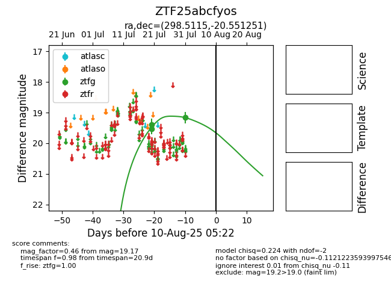

Target ZTF25abcfyos at 2025-08-10 05:22, see:
FINK: fink-portal.org/ZTF25abcfyos
Lasair: lasair-ztf.lsst.ac.uk/objects/ZTF25abcfyos
ALeRCE: alerce.online/object/ZTF25abcfyos
alt names
ZTF25abcfyos (ztf,fink)
coordinates:
equatorial (ra, dec) = (298.5115,-20.55125)
galactic (l, b) = (20.5928,-22.63770)
photometry
last ztfg=19.17
3 ztfg detections
